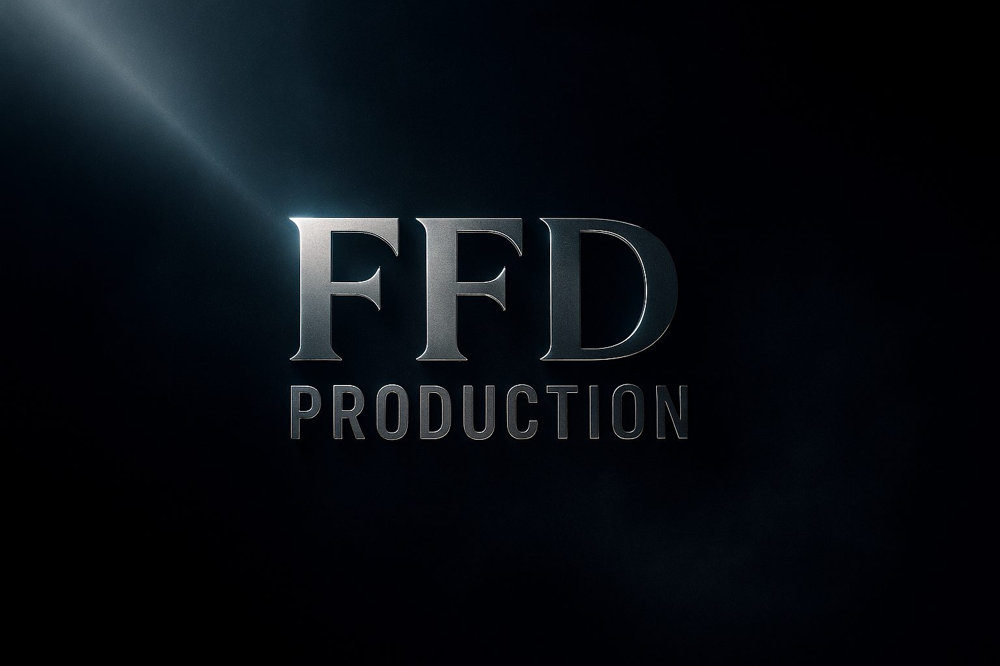
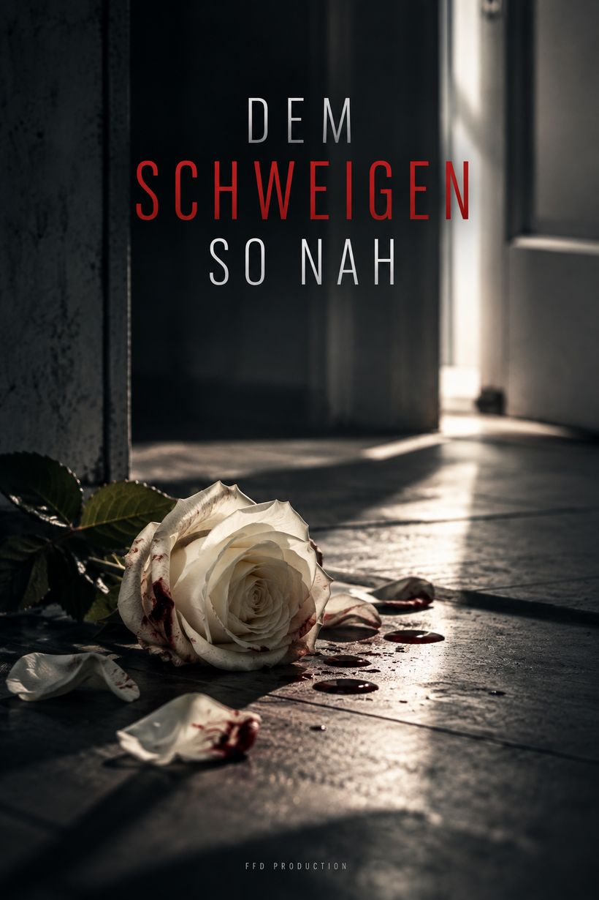
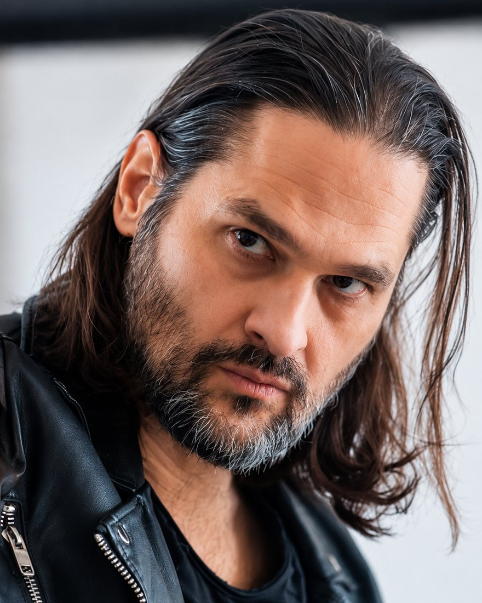
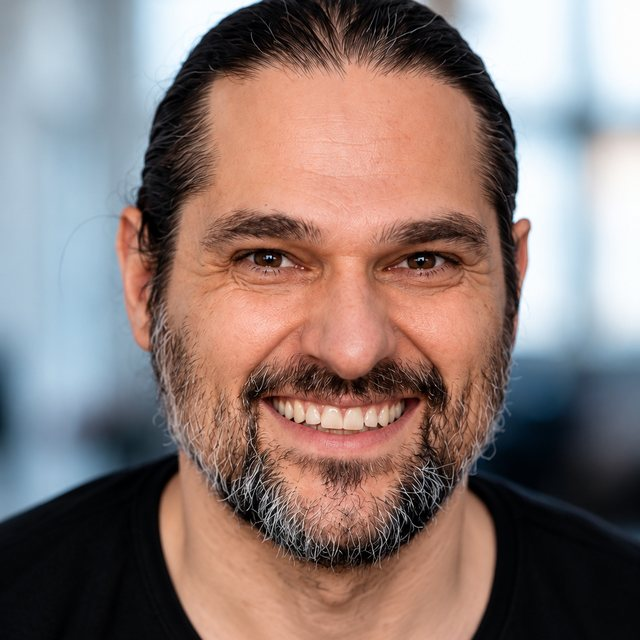
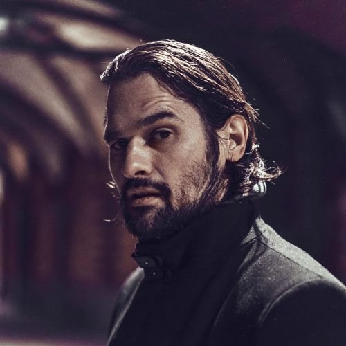

FFD Production entwickelt und realisiert eigene Filmprojekte. Gesellschaftlich relevante Stoffe, persönlich und nah an den Figuren erzählt.
Geschichten, die bleiben.

Dem Schweigen so nah
Als eine Polizistin ins Haus eines langjährigen Familienfreundes gerufen wird, glaubt sie an dessen Ehefrau Spuren von Misshandlung zu sehen. Kann sie ihrem Instinkt trauen oder steigert sie sich rein, weil sie an das familiäre Trauma erinnert wird, dem sie selbst schon einmal entkommen musste?
Synopsis lesen
An Jörgs (48) Geburtstagsfeier gehören sein Kripo-Kollege Thomas (42) und dessen Schwester Steffi (45) zu den letzten Gästen. Sie feiern auch das Ende einer langen Ermittlung, bei der Jörg Thomas das Leben rettete. Seine Ehefrau Renée (45) ist ebenfalls anwesend, die beiden wirken wie ein harmonisches Paar, das sich kleine liebevolle Gesten schenkt. Auch das Verhältnis zwischen den Geschwistern ist sehr nahe, näher als die meisten sich stehen. Der Abend klingt entspannt aus, doch am nächsten Tag werden Steffi und ihr Kollege (31) zu einem abgebrochenen Notruf beordert. Die Adresse ist nicht unbekannt.
Jörg öffnet die Haustür, überrascht und mit Blutspuren an der Hand. Renée sei die Treppe hinuntergestürzt und habe sich im Schock verwählt. Er habe bereits den Rettungsdienst gerufen. Obwohl Steffi Jörg als liebevollen und loyalen Menschen kennt, rät ihr ihr Instinkt genauer hinzusehen. Sie besteht darauf, Renée zu sehen, und ist geschockt von ihrem Anblick: Kratzer im Gesicht, eine aufgeplatzte Lippe, Würgemale am Hals – wie ein Treppensturz sieht das nicht aus. Doch Renée verteidigt verbissen ihren Mann. Auch Jörgs Fassade bröckelt nicht. Er zeigt sich weiterhin als besorgter Ehemann, der Steffi das Misstrauen nicht übelnimmt.
Am Abend sucht Steffi bei Thomas Halt und Rat. Doch statt Verständnis erntet sie zunächst Widerstand. Ihr Bruder arbeitet seit Jahren Seite an Seite mit Jörg. Er verdankt ihm sein Leben und kann sich das Bild eines gewalttätigen Ehemanns nicht vorstellen. Doch auch Thomas weiß, wie das ist, wenn das eigene Haus eine Parallelwelt ist, deren Geschehnisse eisern geheim gehalten werden. Die Geschwister suchen Halt beieinander wie damals, und gleichzeitig fürchtet sich Steffi vor dem, wozu Thomas in der Lage ist.
Laut UN Women erlebt in Deutschland weniger als alle vier Minuten eine Frau Partnerschaftsgewalt. Und doch, die Taten bleiben im Dunkeln.
Dem Schweigen so nah zeigt, wie gut die Gewalt vor der Außenwelt verborgen wird, selbst vor dem engsten Umfeld. Doch Steffi, motiviert durch ihr eigenes familiäres Trauma, sieht jetzt hin. Und doch steht sie selbst als Polizistin den Geschehnissen machtlos gegenüber. Der Film erzählt von der Komplexität häuslicher Gewalt, wie schwer es bleibt, wirklich zu helfen, selbst für die, die genau dafür ausgebildet sind, und wie das Trauma auch nach Jahrzehnten die Betroffenen lenkt.
- Gagen
- Technik
- Drehort und Ausstattung
- Postproduktion
- Festivaleinreichungen
- Barrierefreie Fassung
Hilfetelefon „Gewalt gegen Frauen“: rund um die Uhr, kostenfrei, anonym.
Ein Film von Peter Klomfass
Farouk El-Khalili spielt Amar und war als Produzent und Co-Autor beteiligt. Der Film wurde international auf Festivals präsentiert und mehrfach ausgezeichnet.
Standbilder und Plakat © FFD Production



Farouk El-Khalili
Farouk El-Khalili, 1981 in Berlin geboren, studierte Schauspiel am Berlin Acting Studio. Er arbeitet als Schauspieler, Model, Moderator und Sprecher für Film, Fernsehen und Theater.
FFD Production wurde 2022 von dem Berliner Schauspieler, Autor und Produzenten Farouk El-Khalili gegründet. Die unabhängige Produktionsfirma entwickelt und realisiert eigene Filmprojekte mit einem besonderen Fokus auf gesellschaftlich relevante Stoffe und eine persönliche, charakterorientierte Erzählweise.
Mit dem Kurzfilm Amar & Lena (2024) realisierte FFD Production eine erste eigene Produktion, bei der El-Khalili als Produzent und Co-Autor beteiligt war. Der Film wurde international auf Festivals präsentiert und mehrfach ausgezeichnet.
Aktuell entwickelt FFD Production den Kurzspielfilm Dem Schweigen so nah (AT), bei dem El-Khalili als Produzent und Simone Geißler (Haus der Stille) als Regisseurin beteiligt ist.
Lassen Sie uns über Film reden.
Koproduktion, Förderung, Presse oder Unterstützung eines Projekts: Schreiben Sie uns.
Farouk El-Khalili
Atzpodienstr. 12A
10365 Berlin
Tanja Frehse
anfrage@agenturfrehse.com
+49 173 377 27 54